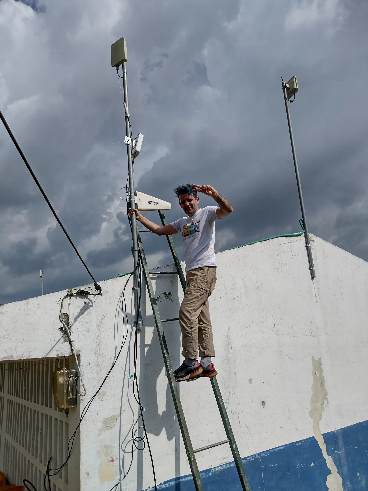
Hi, I’m Sanjay, and although I’m not an expert on connectivity, I’ve learned by tinkering: that is, through trial and error and asking others about it. Today, I’ll help you install your own antenna!
It’s important to know that there are many types of 3G or 4G antennas, although, in general, this solution should work for installing whichever one you have. Your antenna might come with a manual or instructions. We recommend reading it first. But if you don’t have one, or if the person who sold you the antenna didn’t explain how to do it, what follows might just do the trick!
What does installing a 3G/4G antenna mean?
In short, it’s setting up and getting a device running that allows you to improve cellular signal access in an area where it was previously weak. Keep in mind that for this solution, you need to have the antenna. If you don’t have one yet, you can go to the solution How to buy a 3G-4G antenna? to find out which one works best for you.
Remember, the instructions and what you find here might look a bit different.
What is it for?
There are places where cellular phone signal is very weak. You can see this in the connection bars on your phone (you might see only one bar or something that says H+, E, or even no signal at all). An antenna with the necessary characteristics for the conditions of the place where you want to connect can help you get better connection quality.
I recently understood that the Internet signal that reaches cell phones travels through invisible electromagnetic waves, and that phones have a small antenna inside that captures those waves, allowing us to access the internet.
What the antenna does is capture and amplify the specific cellular data signal (3G or 4G). In other words, the signal travels in electromagnetic waves through the air from a place higher than where you are—above trees, buildings, or hills—and then comes down through a cable to your level. Once it’s at your level, the signal can be shared over the air using a WiFi network, or by cable using a modem or router.
I know these terms might seem confusing, but as you go through the installation steps, it will become clearer.
Before you start, some safety issues
Remember that you are working with electrical equipment. Be careful when connecting to the power supply. Be aware of weather conditions, especially the risk of storms: at the moment of installation, the antenna could act as a lightning rod. A lightning strike on the antenna could cause serious personal injury and property damage.
What do you need?

- The 3G-4G antenna you purchased.
- Coaxial cable to bring the signal from the antenna.
- Modem with its respective power cable, Ethernet cable, and quick start guide (or instruction manual).
- SIM card from the cellular operator that has the best signal in the area.
- Computer with Ethernet connection and/or WiFi or smartphone (Android / iOS).
- A tall pole (the same length as the cable or a bit less): it can be a metal pipe, wood, or bamboo. The important thing is that it is as straight as possible and sturdy.
- Antenna mounts (which allow you to hang the antenna on the tall pole).
- Wrench for tightening nuts.
- Materials and tools to secure the pole (depends on where you install it).
How is it done?
This solution has 6 steps, some simpler than others, but don’t worry—if I could do it, you can too. Let’s get started!
Step 1 → Define the place where the antenna and modem will be installed
Before unpacking your purchase, define where you want (or others want) the modem and antenna to be permanently located. If it’s in your home, it could be in the living room. If it’s in a community space, it could be in a room that is secure but where the signal reaches everyone who wants to use it.
Keep in mind that the antenna must be securely attached to the pole, and the pole must be firmly secured somehow outside the house or space. We will explain how later.
The modem needs electricity, so identify the power outlet you are going to connect it to.
Finally, define where you are going to run the cable from the antenna to the space where the modem will be. You might have to drill a hole in the wall so you don’t have to leave a window open. WATCH OUT! Don’t do this until you have verified where the antenna works and connects best.
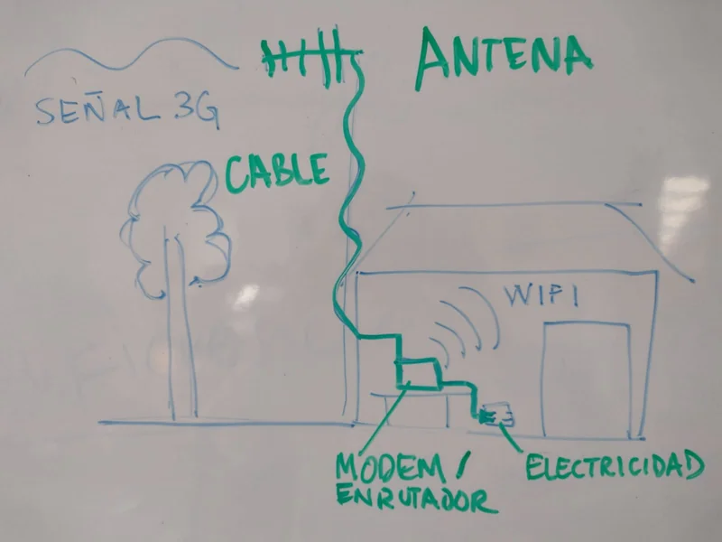
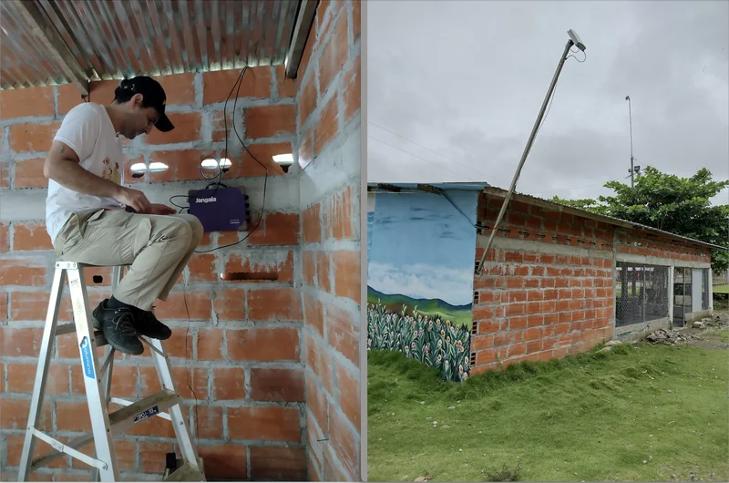
Step 2 → Identify the mobile phone towers in the area
For antennas to work as well as possible, they must be able to “see” each other or, at least, they should point toward the same place.
If you live in a region with many mountains, it will be a bit more difficult to access a good signal compared to a flat place. If this is your case, your antenna will need more height.
Now identify the nearest phone tower. Look for tall towers with antennas. They are normally located on the peaks of the highest mountains to allow for greater coverage. It is very important that you locate it because that is where your antenna must point.
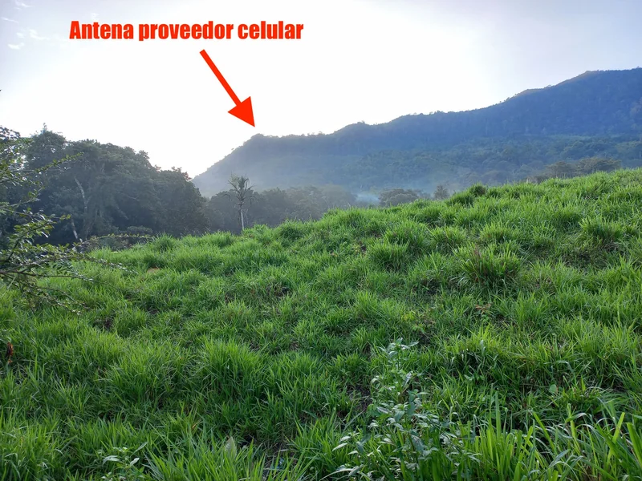
If you don’t know where the nearest cellular phone tower is, you can also ask your neighbors.
 Taken from Wikimedia Commons
Taken from Wikimedia Commons
🎉 If you made it this far, it means you have already managed to establish the location of the main elements of your solution. That is, you already know…
- Where to install your antenna (where it will stay).
- Where it should point, that is, toward the nearest phone tower.
- Where you will put the modem that will generate the WiFi signal to connect computers or cell phones.
You’re doing great! Now comes the easy part: assembling the antenna.
Step 3 → Insert the SIM and connect the modem to electricity
Open the modem box. It should include a power cable, an Ethernet cable (to connect a computer), and a quick start guide (instructions). Read the guide carefully because every antenna is different. The following steps of this solution should match those in the guide, just in more detail.
Keep in mind that inserting the SIM can be tricky. I had to make several attempts to get it right. Make sure the metallic part of the SIM (the chip) matches the metallic contacts of the modem. I’ll explain it a bit better below.
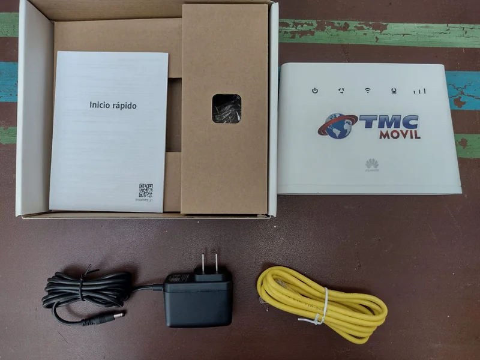
Identify the SIM card size that matches the modem tray.
First, open the modem cover where the SIM is inserted (usually on the back of the modem). Identify the card size you need to insert. The modem instructions (quick start) will indicate this. The model I have uses the Mini SIM size.
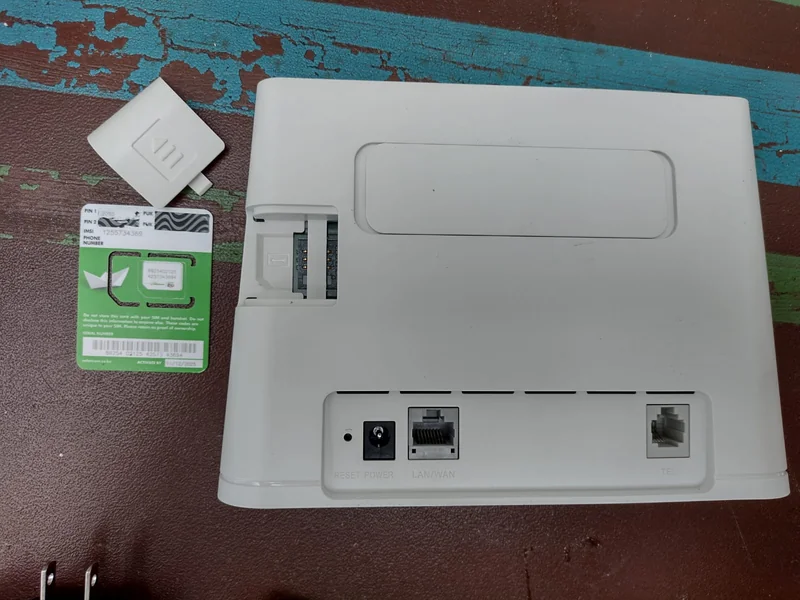
Insert the SIM card into the tray.
You will notice that both the SIM tray and the SIM card have a cut (beveled) corner. This indicates the position in which you must insert the card.
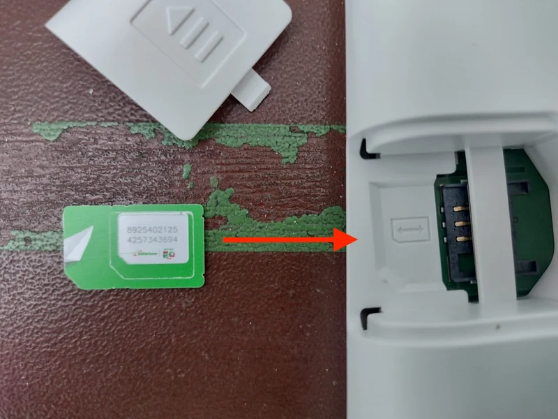
Insert the SIM carefully into the tray and put the cover back on.
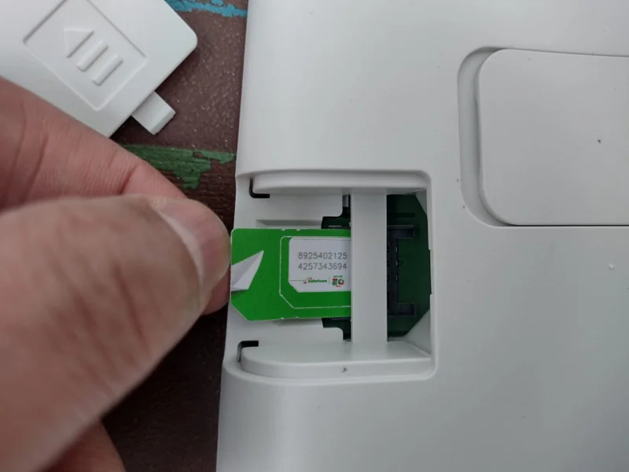
Connect the power cable to the modem and the power outlet.
Then, turn on the modem as indicated in the guide. It may be automatic or with a power button.
Check that the modem is connected to the internet.
On the front of the modem, you will find different connection indicators, and the instructions explain what each one means. In the example model, we see that:

- The first indicator from left to right shows if it is on or off.
- When the second one is red, it means it has no signal. If it is blue or green, it means it is connected. (In this example, it is connected).
- The third indicates that the modem is emitting a wireless or WiFi signal in the space.
- The fourth shows if an ethernet cable is connected (in this case, no).
- And the fifth represents the signal strength (like the signal bars on a cell phone). In this example, the signal is very good.
Once this step is finished, your modem is ready—you’re halfway through the solution! If the connection indicator (the second one in the example) is red, simply turn off the modem and let’s connect the antenna to it.
Step 4 → Connect all the antenna elements and hoist the antenna
The time has come to assemble your antenna. The best way to start is to take out and put together all the elements needed to assemble it. Then, let’s begin.
Adjust the antenna to the highest end of the pole.
Start by adjusting the antenna mount to the base of the antenna using the screws provided for this. Tighten the screws carefully, making sure they are well secured.
Then adjust the antenna mounts to the highest end of the pole. Remember that the pole must be shorter than the length of the cable you have. The mounts have a piece to “wrap” around the pole so that when you tighten the nuts, it grips the pole as shown in the image.
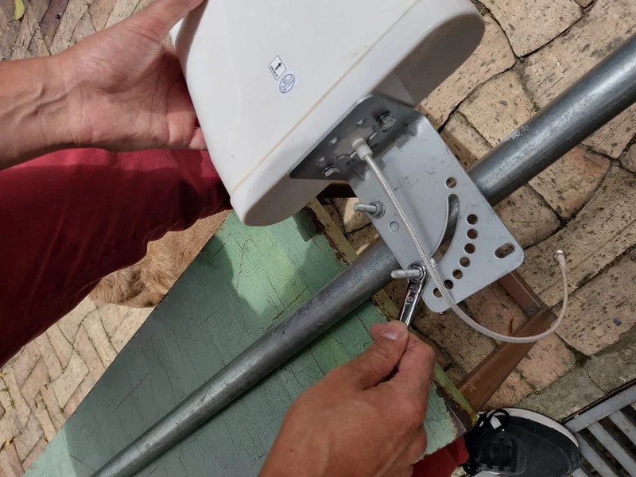
 Antenna mount hanging on the pole"> Antenna mount hanging on the pole">
|
 Antenna hanging on the final pole"> Antenna hanging on the final pole">
|
Extend the cable and connect the end that goes to the antenna cable.
Unrolling the cable and extending it to its full length helps make it easier to handle. Look for the connector that fits the antenna connector and connect them.
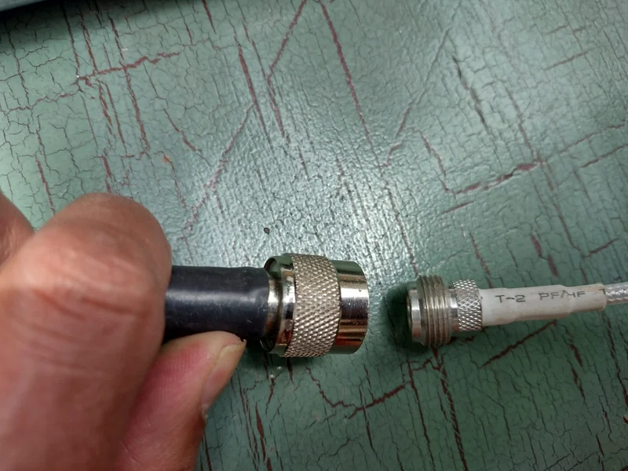
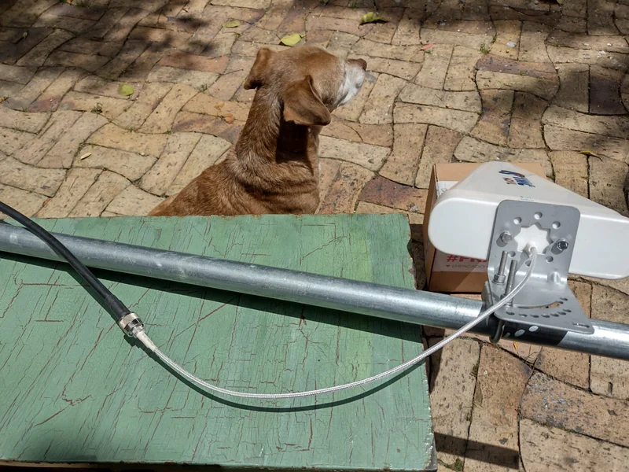
Find the modem-to-cable connector and connect.
In this modem model, there is a cover on the back of the modem that you must remove with a bit of force (keep the cover in the modem box). There you will find the place to connect the cable. Tighten the connector thread as much as possible, carefully.

|
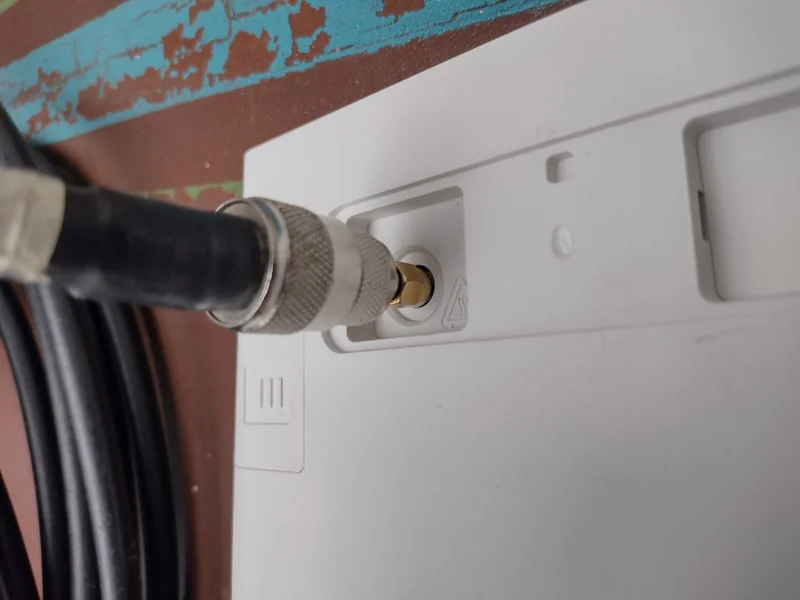 |
Now you can hoist the antenna with the help of another person and point it toward the phone tower you identified in the second step. Then, turn on the modem and that’s it. You only have two steps left to finish. Bravo! 👏🏽
Step 5 → Connect the computer or cell phone to the modem
Turn on the WiFi on your computer or cell phone and search for the modem’s network. You can usually find the network name on a sticker on the base of the modem. There you will also find the password to connect. Enter the information on your device, and with that, you’re ready to browse the Internet!
If your computer has an Ethernet port, you can also connect directly by cable. Connecting by cable will always give you the best possible internet browsing speed.
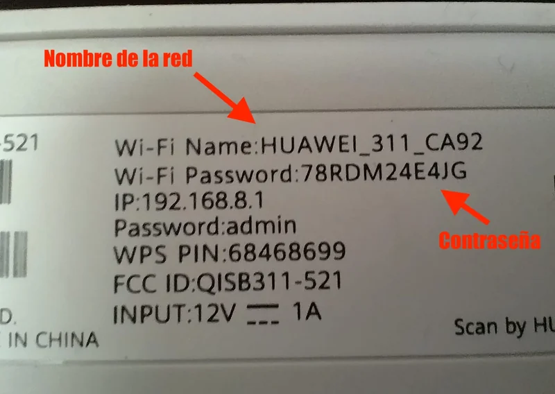
If you managed to connect, go to the next step. If not, read what follows.
Couldn’t connect to the internet? I have some recommendations for you 👇🏽
Sometimes we are in places far from cell phone towers or with a lot of interference between the tower and our antenna. If this is your case, you can try some alternatives.
- Enter the modem’s administration webpage and try pointing the antenna in other directions.
Enter your device’s browser (it could be Firefox, Google Chrome, Microsoft Edge, or Explorer) and type your modem’s IP address. Generally, you can find this address on the same sticker under the modem. The IP of this modem 👇🏽, for example, is 192.168.8.1.

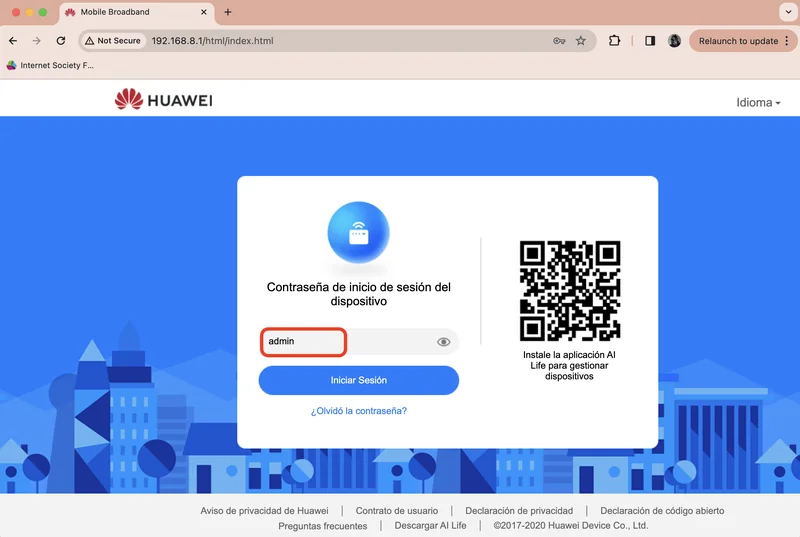
When you enter that IP address, you will see the modem login page. There, they will ask for the password, which you also find on the sticker. Usually, the password is admin in lowercase.
Then they will ask you some questions to configure your modem’s preferences. Read carefully and select what you think is best. When finished, you will arrive at the modem’s home page where you can check the connection quality and speed.

If the green checkmarks appear, it means everything is connected correctly. On the other hand, if you see a red exclamation mark and an “X” on the internet bars, it means there is no connection.
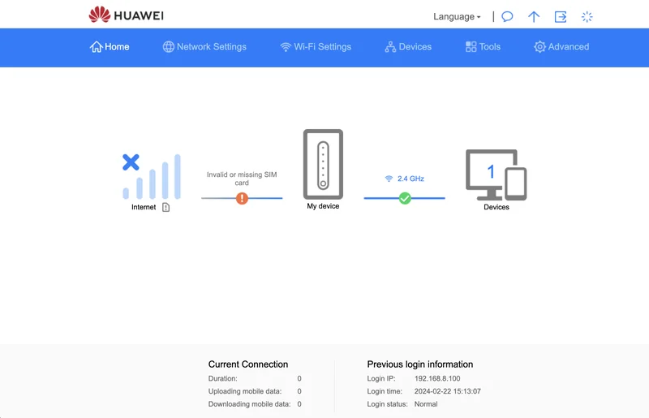
This is where you must start turning the antenna, trying to point it in another direction until you find a better connection with the cell phone tower. Do it slowly and in small intervals. Also, try pointing it slightly more up or down using the different holes of the antenna-to-pole mount.

Every time you change the position of your antenna, wait a few seconds to see if the indicators on the screen or the device change. If the internet bars and the green check appear, you have managed to get a signal! Congratulations! You can now browse the internet.

💡 How is internet usage measured? Usage is measured by the amount of data downloaded to your computer or cell phone when making “a query” (for example, watching a video, listening to a song, reading an article in an online newspaper, or receiving a text message). The “weight” of each of those files is measured in bytes of information, and the most common measure when you buy a data plan is Gigas, Gb, or Gigabytes.
Do you know how many things you can do with 1 Giga (1Gb)?
💡 How fast can you access information on the internet? Just like knowing how much they “weigh,” it is important to know at what speed you can access those files you are querying. This is measured in Megabytes per second or Mbps that are downloaded to your computer or cell phone.
Do you know what speed you need to have certain services?
🧭 Run speed tests
Now that you know about data weight and speed, you can run your own speed test. This will allow you to know how fast data is downloading from the internet. For this, consult the solution How to test your Internet connection speed?. There you will find the step-by-step guide.
Still can’t connect? 😖 Here are some more advanced recommendations 👇🏽
For greater precision, you can perform signal strength tests by turning the antenna in different directions.
Sometimes geographical conditions are more complex than we imagine. In those cases, we will have to determine if the antenna is effectively connected to the cell phone tower and with what quality.
For that, enter the “Advanced” section in the modem menu and look for “System” and then “Device Information”. That’s how it appears on my modem, but it should be something similar on yours.
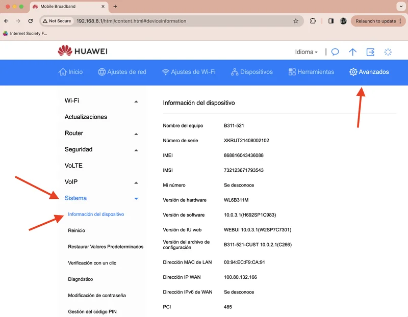
In this list of information, you will find several data points. The 4 parameters you are looking for are:
- RSRQ, which indicates signal quality;
- RSRP, which indicates signal strength;
- RSSI, which indicates signal power;
- SINR, which indicates the relationship between the signal and the noise being generated.
*Remember that the signal is electromagnetic waves traveling through the air.
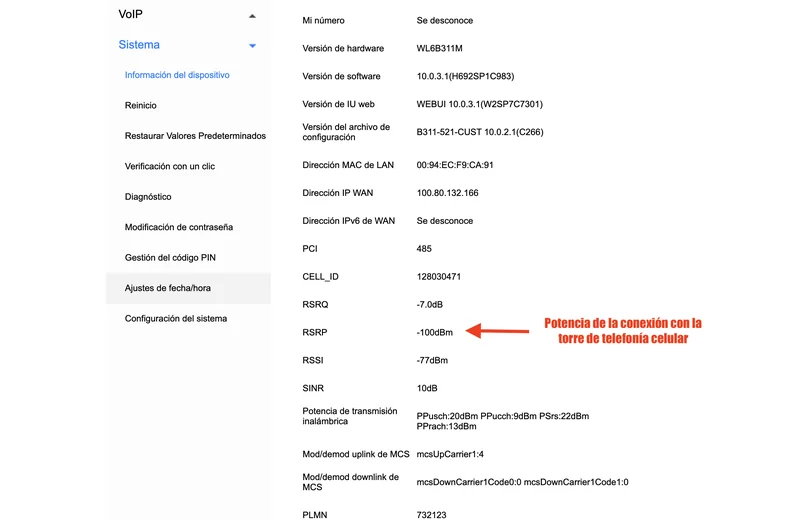
Below, you can see a table that indicates the coverage parameters of the cellular signal your antenna is receiving. Note that three of them are negative numbers, and as they get closer to zero, the signal improves. This information might seem a bit technical, but don’t worry, it’s not necessary to understand it in great depth for it to work.
| Coverage | RSRQ | RSRP | RSSI | SINR |
|---|---|---|---|---|
| Excellent | > -10 dB | > -80 dBm | > -65 dBm | > 20 dB |
| Good | -10 dB to -15dB | -80 dBm to -90 dBm | -65 dBm to -75 dBm | 13 dB to 20 dB |
| Average | -15 dB to -20 dB | -90 dBm to -100 dBm | -75 dBm to -85 dBm | 0 dB to 13 dB |
| Low | < -20 dB | < -100 dBm | < -85 dBm | < -0 dB |
*Keep in mind that ”>” means “greater than” and ”<” means “less than”. That is, ”> -10 dB” means “greater than -10dB”. *Remember that negative numbers work in reverse to positive numbers. For example, -10dB is greater than -80dB (because it is closer to zero).
With this information in mind, what you should do is continue rotating the hoisted antenna in small intervals and wait a few seconds to see how those numbers change.
I mainly look at the RSRP, which is the connection strength. It might be useful to draw a circle on the floor around the antenna pole and draw lines that divide the circle into equal pieces. Then, point the antenna in the direction of each line and check if the parameter improved or worsened. If it improved, keep turning and checking the parameter. If it worsened, go back to the previous point.
This is how the antenna is positioned with greater precision. Good luck capturing the signal! You have become a true internet tinkerer.
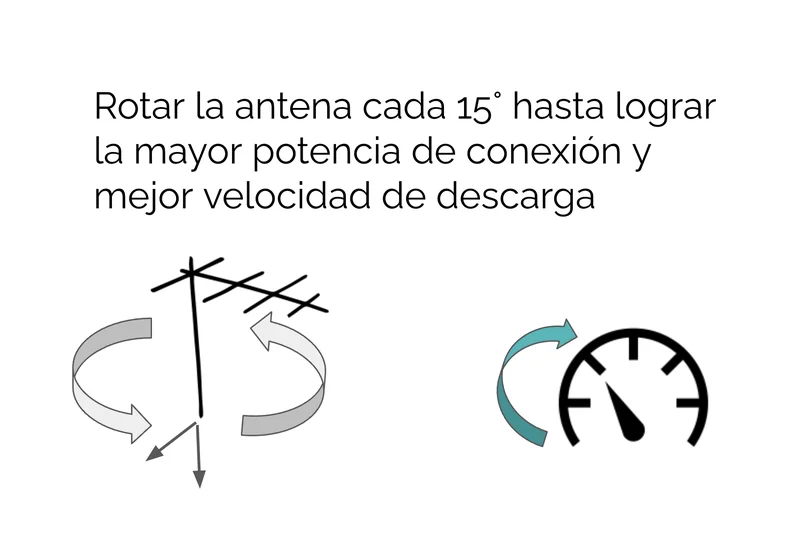
💡 Keep in mind that weather affects the signal As you are using an outdoor antenna, weather conditions might affect how fast or slow your connection is. For example, a very humid day can make your connection slower. Don’t worry, little by little you will improve your internet experience together as you try new solutions.
Step 6 → Secure the antenna
We have reached our last step!
Now, knowing the best direction for the antenna, it is time to install your antenna permanently to a wall, a column, or a tree, in the place you determined in Step 1.
Tighten the antenna mounts to the pole and hoist the antenna
With the help of a wrench, tighten the antenna mounts to the pole firmly to ensure they don’t move with the wind or rain, or if a bird lands on top. If you already had them well tightened, it is not necessary to do this again.

Anchor the pole to the wall or the support you have
Then, use appropriate mounts to anchor the pole to the base. If it’s to a wall, drill and put in anchors and screws to secure it. If it’s to a tree, tie it with wire.
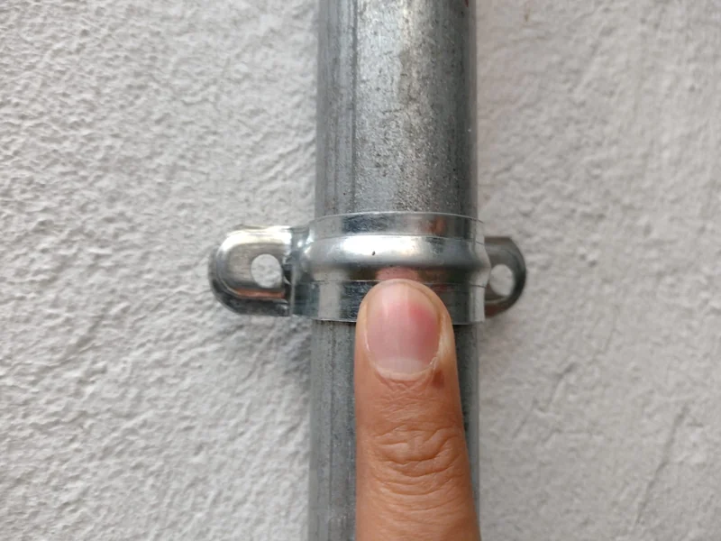

Once fixed, you have finished the installation of a 3G/4G antenna that will allow you to have a WiFi signal in a fixed space.
You are, officially, the “tinkerer” of your home or community. Congratulations! 👷🏽♀️🎉👷🏽
Through trial and error, you will feel more and more confident to tinker, that is, to solve by doing. Now, would you be up for doing another solution? Go ahead and keep browsing! See more solutions
Other possible Internets
Among many connectivity solutions I have tried, this is one of the best for creating a space to access the Internet together, allowing several people to connect at the same time to a WiFi signal in places where the 3G or 4G signal is weak.
I recommend it not only for the home but for common spaces like schools, libraries, businesses, or community halls. It also works in public spaces like parks if they have a place to leave it under lock and key and with constant electricity.
Keep in mind that if there is no mobile phone coverage, this solution will not work. But don’t get discouraged; phone coverage is gradually increasing all over the planet. In the meantime, you can consult another SOLE tool called “The Disconnected” →, where you will find solutions for places where there is no internet.
Although it is not an inexpensive solution (the price of an antenna is between $370 - $400 USD), I have seen that it can have a great impact as it becomes a community internet access point.
For this, the community could agree, buy it with contributions from everyone, and maintain it together. This can result in a considerable initial expense, but in the future, it is cheaper than when each person buys their own individual data plan.
💡 At SOLE Colombia, we have carried out this solution with communities where an antenna is installed in a community space that everyone can access. There, the community decides how much, when, and for what the internet is used. In this way, data top-ups are collectively regulated according to needs and are fully utilized in a shared way.
For example, priority is given to children doing their homework or the community watching a movie together, over individual uses like accessing social networks. This, of course, implies new challenges. But the starting point is clear: you already have internet access!
💬💪🏽 Learn about our experience with a community in Cáceres, Antioquia →
Knowing this, how far would you like to go? Is this a solution you could encourage where you live? We hope it has been useful to you! And if it was, share it with other people who you know could benefit from it.
See you soon! 👋🏽
Related solutions
- If there is no mobile signal where you live, this solution could be useful temporarily: How to buy a satellite antenna?
- Once the equipment is installed, the challenge is to take care of it as a community. In this solution, we share a game that could help you: How to use the game to learn to take care of equipment as a community?
- And the next challenge could be… inviting people to use the internet in a group!
Remember that in Voltaje ⚡⚡ you can find many more solutions to connect without fear of using the internet in a group. Go ahead and keep browsing! See more solutions